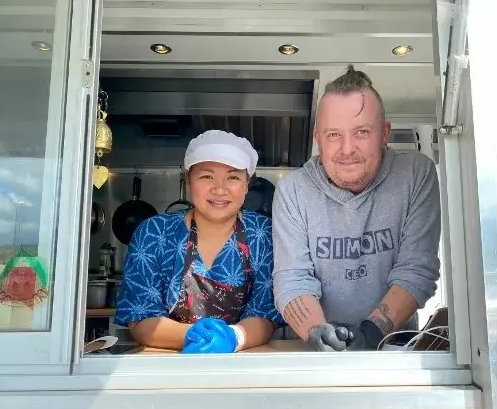

Om oss
Har du vært på ferie i Thailand? Husker du den gode maten? Den utrolige kombinasjonen av søtt og syrlig. Alle smakene fra urter og krydder i perfekt kombinasjon. Skulle du ønske at du kunne få servert den maten hjemme i din egen stue? Nå kan du det.
Puttida er vår chef. Hun kommer fra Chainat i sentrale Thailand, noen få mil nordvest for Bangkok. Hun har bachelor degree i politisk vitenskap, og er ikke utdannet kokk. Men som mange Thai kvinner har hun lært å lage mat av sin mor fra tidlig alder. Mat er veldig viktig for Thai. Det er kultur. Mat skal lages med friske ingredienser, kjøpt på markedet om morgenen. Det finnes ingen raske løsninger, ingen snarveier. Alt lages fra bunnen av i et ekte Thai kjøkken. Den filosofien har hun brakt med seg inn i vårt firma. Vi lager så mye som mulig selv. Sauser, dipping, oljer og krydderblandinger. Grønnsaker og kjøtt kutter vi selv. Microbølgeovn har vi ikke, og skal ikke ha!
Kontakt oss nå for nærmere informasjon. Vi gleder oss til å lage mat til deg. Hilsen chef Puttida, og visergutt Simon....